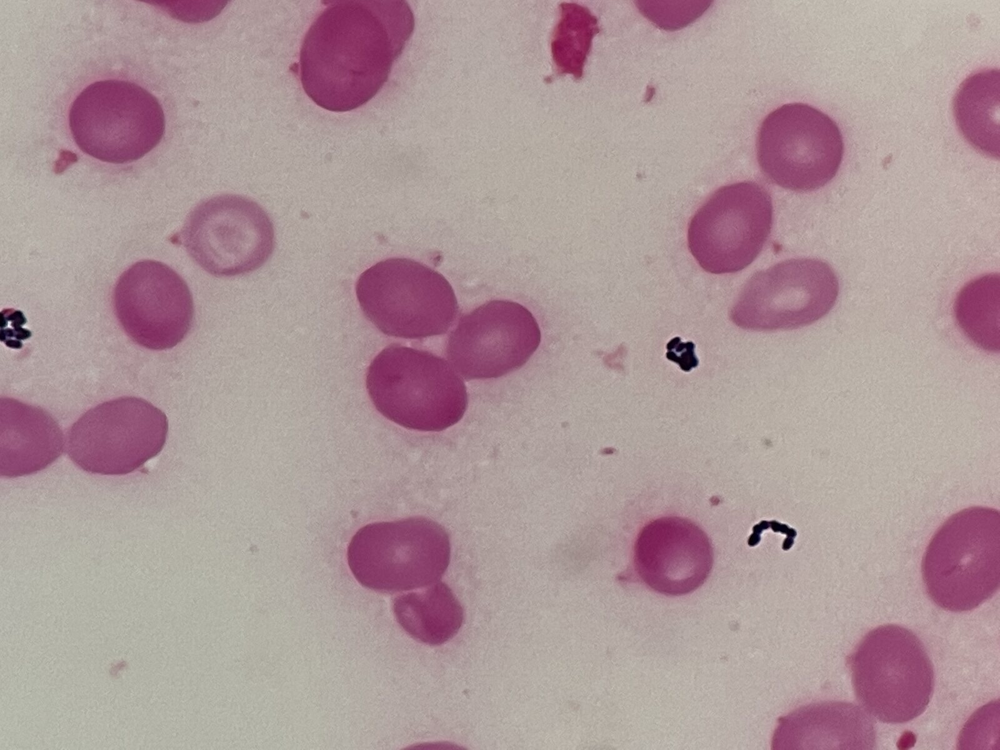
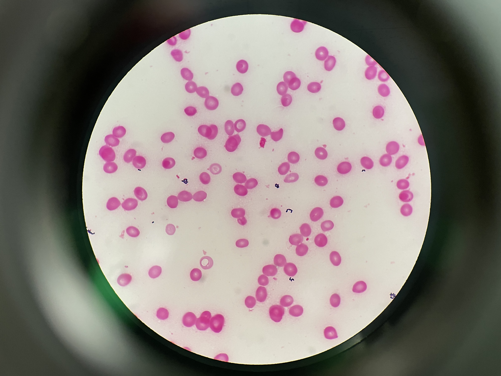
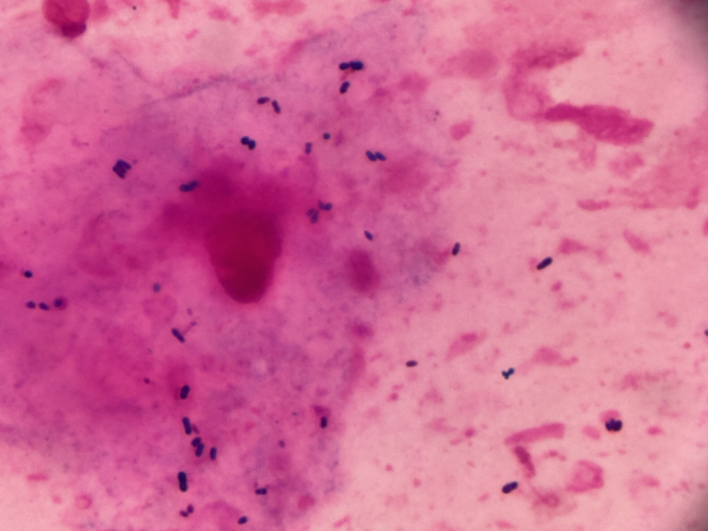

グラム染色 像（Corynebacterium 属） 撮影：ICU関谷



※ 本ページは C. jeikeium 専用ですが、Corynebacterium 属共通の染色像として C. striatum を含めて表示しています（jeikeium 単独画像が現時点で未収録のため）。
分類・特徴
グラム陽性多形性桿菌で、ヒト皮膚（特に腋窩部）の常在菌。脂肪酸合成酵素を欠損しているため外因性脂肪酸を必要とする脂質要求性（lipophilic）菌であり[2]、多剤耐性院内感染病原体として知られる[1][2]。
主な感染症
抗菌薬選択
※ 灰色表示の抗菌薬は日本未発売のため、原則として保険診療では使用不可。
第一選択（重症感染症・心内膜炎）
代替・経口移行
- リネゾリド（MIC90: 0.5-1 mg/L、極めて良好、経口可）[1][2][4][5]
- テイコプラニン（MIC90: 0.5-1 mg/L、グリコペプチド系代替）[4][5]
- ドキシサイクリン（中等度、tet(W) 陰性株 57.9% で感受性良好）[2][6]
新規薬
- ダルババンシン（長時間作用型グリコペプチド、心内膜炎使用報告あり）[3]
注意すべき抗菌薬
治療戦略
出典
- Mitchell BI, Markantonis JE. An Underestimated Pathogen: Corynebacterium Species. J Clin Microbiol 2025;:e0155224.
- Tauch A, et al. Complete Genome Sequence and Analysis of Corynebacterium Jeikeium K411. J Bacteriol 2005;187(13):4671-82.
- Harada S, et al. Genomic Epidemiology and Antimicrobial Resistance of Corynebacterium Macclintockiae. J Clin Microbiol 2025;:e0050025.
- Rasmussen M, Mohlin AW, Nilson B. From Contamination to Infective Endocarditis—Population-Based Retrospective Study of Corynebacterium. Eur J Clin Microbiol Infect Dis 2020;39(1):113-119.
- Hansmeier N, et al. A Comprehensive Proteome Map of Corynebacterium Jeikeium K411. Proteomics 2007;7(7):1076-96.
- Arnés-García D, et al. Infective Endocarditis Due to Corynebacterium Jeikeium: Four Case Reports and Review. Microorganisms 2024;12(7):1337.
- Imoto W, et al. Corynebacterium Jeikeium-Induced Infective Endocarditis and Perivalvular Abscess. J Infect Chemother 2021;27(6):906-910.
- Ifantidou AM, et al. Corynebacterium Jeikeium Bacteremia in a Hemodialyzed Patient. Int J Infect Dis 2010;14 Suppl 3:e265-8.
- Fischer-Wellenborn M, et al. Antibiotic Resistance Profiles of Seven Genomospecies of Corynebacterium Jeikeium. J Clin Microbiol 2025;:e0041825.
- Khodadadi RB, et al. Retrospective Analysis of Antimicrobial Susceptibility of Non-Diphtheriae Corynebacterium 2012-2023. J Clin Microbiol 2024;62(12):e0119924.
- Soriano F, Zapardiel J, Nieto E. Antimicrobial Susceptibilities of Corynebacterium Species. Antimicrob Agents Chemother 1995;39(1):208-14.
- Gómez-Garcés JL, Alos JI, Tamayo J. In Vitro Activity of Linezolid and 12 Other Antimicrobials Against Coryneform Bacteria. Int J Antimicrob Agents 2007;29(6):688-92.
- Sánchez Hernández J, et al. In Vitro Activity of Newer Antibiotics Against C. Jeikeium, C. Amycolatum and C. Urealyticum. Int J Antimicrob Agents 2003;22(5):492-6.